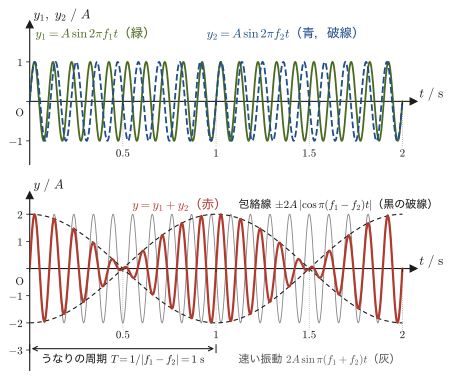
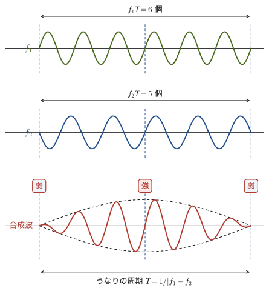
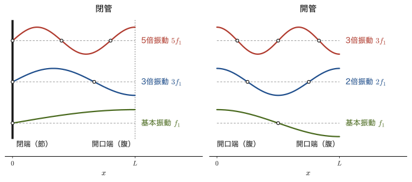
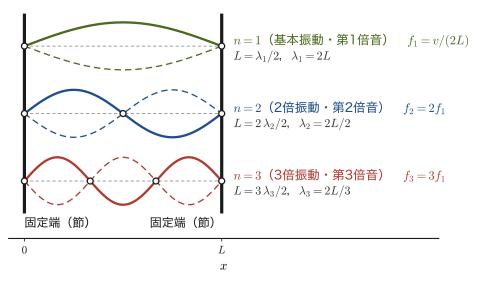

第12章音波 — ドップラー効果・うなり・共鳴・弦の振動
救急車が近づいてくるときはサイレンの音が高く，遠ざかるときは低く聞こえる——高校物理では「ドップラー効果」の公式として暗記した人も多いだろう．しかし，なぜ音源が動くと音の高さが変わって聞こえるのか．本章では，音源と同じ速さで走る仮想の観測者を考えるという発想で，この公式を導く．さらに，音源が音速を超えたときに起こる衝撃波（ソニックブーム）や，音源・観測者が視線からずれた向きに動くときの一般式（斜めドップラー効果）まで，式を1行も飛ばさずに導いていく．
もうひとつの柱は共鳴である．音さで別の音さや弦を鳴らす実験，ギターやバイオリンの弦，リコーダーの管がなぜ決まった高さの音を出すのか——これらはすべて「境界条件のもとでの定常波」という1つの考え方でつながっている．前章（第11章）で学んだ波動関数 $y=A\sin(\omega t-kx+\phi)$ と定常波を，音波という縦波と弦の横波に当てはめ，うなり（三角関数の和積公式），閉管・開管の共鳴，弦を伝わる波の速さ $v=\sqrt{S/\rho}$ へと進む．高校物理で覚えた公式が，微分と三角関数を使うと自分の手で導けるようになる．
- 音速の温度依存性と，音源・観測者が動くときの振動数の変化（ドップラー効果）の導出，および斜め方向の運動を含む一般式
- 音源が音速を超えて運動するときに生じる衝撃波（マッハ円錐）の幾何学的な導出
- わずかに異なる振動数の音が重なって生じる「うなり」の周期と波形の導出（和積公式の応用）
- 閉管・開管の気柱に生じる定常波（共鳴）の境界条件からの導出，開口端で反射が起こる物理的な理由と開口端補正
- 弦を伝わる波の速さ $v=\sqrt{S/\rho}$ の導出（等速円運動による近似），両端を固定した弦の固有振動数，音さによる弦の共振
もとにしたノート：望月泰英『物理学ノート 波動』 pp. 9–17．
12.1 音速とドップラー効果
音波は空気（などの弾性体）を媒質とする縦波（第11章）であり，媒質（medium）を伝わる速さ（音速）は，媒質そのものの性質（温度・種類）だけで決まり，音源がどんな速さで動いていようと関係しない．これは，音波が「空気分子どうしが押し合いへし合いする」という媒質内部の相互作用によって伝わる現象であり，音源の運動は，音源が「いつ・どこで」空気を押したかという振動のきっかけを与えるだけで，できた波が伝わる速さそのものを変えるわけではないからである．
定義12.1 音速
乾燥した空気中を音波が伝わる速さ（音速）$V\ [\mathrm{m/s}]$ は，セ氏温度を $t\ [^\circ\mathrm{C}]$ として，次の1次式でよく近似できる．
\begin{equation} V = 331.5 + 0.6\,t \label{eq:12-sound-speed} \end{equation}ここで $t$ は時間ではなくセ氏温度である（この式の中だけの使い方で，時間を表す $t$ とは別のもの）．係数 $0.6$ の単位は $\mathrm{m/(s\cdot{}^\circ C)}$ で，気温が $1\,^\circ\mathrm{C}$ 上がるごとに音速が約 $0.6\ \mathrm{m/s}$ 速くなることを表す．音速は媒質（この場合は空気）の温度だけに依存し，音源の運動には関係しない．
イメージ：なぜ $V=331.5+0.6t$ という1次式になるのか（先取り）
熱力学・気体分子運動論の章（第23章〜第27章）の知識を使うと，音速は
$$ V=\sqrt{\frac{\gamma RT_{\mathrm K}}{M_{\mathrm m}}} $$と表せることが知られている（ここでは結果だけを使う）．ここで $T_{\mathrm K}\ [\mathrm{K}]$ は絶対温度（うなりの周期 $T$ とは別の量），$R$ は気体定数，$M_{\mathrm m}$ は空気の平均モル質量（マッハ数 $M$ とは別の量），$\gamma$ は空気の比熱比（定圧熱容量と定積熱容量の比，第23章・第27章で学ぶ）である．この式を $t=0\,^\circ\mathrm{C}$（$T_{\mathrm K0}=273.15\ \mathrm{K}$）のまわりで $t$（$=T_{\mathrm K}-T_{\mathrm K0}$）の1次関数として近似すると，
$$ V(t)\approx V(0)+\left.\frac{\dd V}{\dd T_{\mathrm K}}\right|_{T_{\mathrm K}=T_{\mathrm K0}}\!\!\cdot t =\sqrt{\frac{\gamma RT_{\mathrm K0}}{M_{\mathrm m}}}+\frac{1}{2}\sqrt{\frac{\gamma R}{M_{\mathrm m}T_{\mathrm K0}}}\,t $$となる（$\dd V/\dd T_{\mathrm K}=\tfrac12\sqrt{\gamma R/(M_{\mathrm m}T_{\mathrm K})}=V/(2T_{\mathrm K})$ を使った）．空気の代表値 $\gamma\approx1.4$，$M_{\mathrm m}\approx0.02897\ \mathrm{kg/mol}$ を使って実際に計算すると，$V(0)\approx331.3\ \mathrm{m/s}$，傾き $V(0)/(2T_{\mathrm K0})\approx0.606\ \mathrm{m/(s\cdot K)}$ となり，定義12.1の経験式 $331.5+0.6t$ の係数（切片・傾きとも）をよく再現する．つまり，この経験式は，$V=\sqrt{\gamma RT_{\mathrm K}/M_{\mathrm m}}$ を室温付近で1次近似したものになっている（だから気温が大きく違う場合には，1次式と厳密な式の間に少しずれが出る．例題12.4を参照）．
定義12.2 ドップラー効果
音源または観測者が動いているとき，観測者が聞く音の振動数が，音源が出している本来の振動数からずれる現象をドップラー効果（Doppler effect）という．
音源と観測者を結ぶ直線上を，波が音源から観測者へ伝わる向きを正の向きと約束する．音源の速度のこの正の向きに沿った成分を $v_s$，観測者の速度の同じ成分を $v_0$ とし（「成分」なので，負の値もとる），音速を $V$，音源が出す本来の振動数を $f$，観測者が聞く振動数を $f'$ とする．音源・観測者の速度は，すべて空気（媒質）に対する速度である（風は吹いていないとする）．符号の意味を確認しておこう：$v_s>0$ は音源が観測者に近づく向きに動くこと（音の伝わる向きと同じ向き），$v_0>0$ は観測者が音源から遠ざかる向きに動くこと（これも音の伝わる向きと同じ向き）を表す．
注意：符号の付け方を最後まで貫く
第7章7.3節の減衰振動のときと同じ注意がここでも当てはまる．「音源が近づくから振動数が上がる」「観測者が遠ざかるから振動数が下がる」という物理的な役割から，その場その場で式の符号を判断するのではなく，あらかじめ決めた正の向き（音の伝わる向き）にしたがって $v_s,v_0$ の符号を機械的に決め，あとは式 \eqref{eq:12-doppler} に代入するだけにするのがよい．音源が観測者から遠ざかる場合は $v_s\lt 0$，観測者が音源に近づく場合は $v_0\lt 0$ を代入すればよく，公式を「近づくときの式」「遠ざかるときの式」と別々に覚える必要はない．
イメージ：波面が詰まる・伸びる——音源の効果と観測者の効果
公式の導出に入る前に，何が起こっているのかを言葉でつかんでおこう．ドップラー効果には，2つの独立な効果が重なっている．
音源が動く効果（波長が変わる）．音源は1秒間にちょうど $f$ 回振動し，そのたびに1つの山（波面）を空気中に送り出す．音源が観測者のほうへ進みながら山を出すと，次の山を出すまでの間に音源自身も少し前へ進んでいるので，隣り合う山の間隔（波長）は，静止しているときより縮む（図12.1の右側）．反対側（音源が遠ざかる側）では，山の間隔が静止しているときより伸びる．この波長の変化は，波が空気中に刻みつけた「模様」の間隔そのものの変化であり，観測者が動いているかどうかとは関係がない．
観測者が動く効果（山に出会う頻度が変わる）．空気中に波長 $\lambda$ の模様が決まっているとき，観測者が音源に近づくと，1秒間に出会う山の数が増える（振動数が上がる）．観測者が遠ざかると，出会う山の数は減る（振動数が下がる）．
次の導出では，この2つの効果を，「波長 $\lambda=(V-v_s)/f$」「観測者が聞く振動数 $f'=(V-v_0)/\lambda$」という2つの式にそのまま翻訳する．
導出：ドップラー効果の公式（仮想の観測者を経由する方法）
音源は振動数 $f$（周期 $T_{\mathrm s}=1/f$）で振動しながら，速さ $v_s$（音の伝わる向きを正）で動いているとする．ここで，音源とまったく同じ速度 $v_s$ で走る仮想の人1を考える．人1は音源に対して常に同じ位置関係を保っているので，音源が空間に実際に刻みつけている波長（隣り合う山と山の距離）をそのまま体感できる——この波長を求めるのが最初の目標である．
音源が1回振動する時間 $T_{\mathrm s}$ の間に，波面（山）は音速 $V$ で距離 $VT_{\mathrm s}$ だけ進む．その一方で，音源自身も同じ時間 $T_{\mathrm s}$ の間に距離 $v_sT_{\mathrm s}$ だけ進んでいる．したがって，音源が次の山を出す瞬間には，前の山との間隔（波長）は，波面が進んだ距離から音源が追いついた分だけ短くなっていて，
$$ \lambda = VT_{\mathrm s} - v_sT_{\mathrm s} = (V-v_s)T_{\mathrm s} = \frac{V-v_s}{f} $$となる．これを，人1の立場から言い換えると次のようになる：人1は音源と同じ速度で動いているので，音源に対して静止しており，音源の振動をそのまま振動数 $f$ で感じる．一方，波（音）そのものは，音速 $V$ で伝わる媒質（静止した空気）の中を進んでいるので，音源と同じ速度 $v_s$ で動く人1から見ると，波は相対速度 $V-v_s$ で人1を追い越していくように見える．「相対速度 $=$ 振動数 $\times$ 波長」（波の基本関係式，第11章）を人1の立場で書くと $V-v_s=f\lambda$ となり，これを $\lambda$ について解いても同じ式が得られる：
\begin{equation} \lambda=\frac{V-v_s}{f} \label{eq:12-doppler-lambda} \end{equation}この $\lambda$ は，音源が実際に空間に刻みつけた「本当の」波長であり，観測者（人2）がどんな速度で動いていようと変わらないことに注意しよう．
次に，実際の観測者（人2，速度 $v_0$）がこの波を聞く場合を考える．人2から見ると，音速 $V$ で伝わる波を，人2自身が速度 $v_0$（音の伝わる向きを正）で動きながら受け取ることになるので，人2に対する波の相対速度は $V-v_0$ である．波長は式 \eqref{eq:12-doppler-lambda} で決まった $\lambda$（人2の運動によらず一定）のままなので，人2が聞く振動数 $f'$ は，
$$ f'=\frac{V-v_0}{\lambda}=\frac{V-v_0}{(V-v_s)/f} $$となり，整理すると次の公式が得られる．
\begin{equation} f'=\frac{V-v_0}{V-v_s}\cdot f \label{eq:12-doppler} \end{equation}（導出終わり）
公式12.1 ドップラー効果
音速 $V$，音源の振動数 $f$，音源の速度成分 $v_s$（観測者へ近づく向きを正），観測者の速度成分 $v_0$（音源から遠ざかる向きを正）とすると，観測者が聞く振動数 $f'$ は，
$$ f'=\frac{V-v_0}{V-v_s}\cdot f $$である（速度はすべて空気に対する速度で，適用範囲は $\abs{v_s}\lt V$，$\abs{v_0}\lt V$）．高校物理でよく見る「音源が近づくとき」「観測者が遠ざかるとき」といった場合分けの公式は，すべてこの1つの式に $v_s,v_0$ の符号（正負）を正しく代入するだけで再現できる．$v_s\to V$（音源が音速に近づく）と分母 $V-v_s$ が0に近づいて $f'\to\infty$ となり，$v_s>V$ では式の値が負になって意味を失う（音源が自分の出した波面を追い越してしまうため）．この極限が次節の衝撃波（$v_s>V$）へつながる．
例題12.1 気温と音速
気温が $t=20\,^\circ\mathrm{C}$ の日と，$t=0\,^\circ\mathrm{C}$ の日とで，音速はそれぞれ何 $\mathrm{m/s}$ か．また，$340\ \mathrm{m/s}$ という「よく使われる音速の目安値」は，おおよそ何 $^\circ\mathrm{C}$ に対応するか．
解答 定義12.1（式 \eqref{eq:12-sound-speed}）に代入する．$t=20\,^\circ\mathrm{C}$ のとき，
$$ V=331.5+0.6\times20=331.5+12.0=343.5\ \mathrm{m/s} $$$t=0\,^\circ\mathrm{C}$ のとき，$V=331.5\ \mathrm{m/s}$（式の切片そのもの）．$V=340\ \mathrm{m/s}$ に対応する気温は，$340=331.5+0.6t$ を $t$ について解いて，
$$ t=\frac{340-331.5}{0.6}=\frac{8.5}{0.6}\approx14.2\,^\circ\mathrm{C} $$したがって，$340\ \mathrm{m/s}$ という目安値は，気温 $14\,\text{–}\,15\,^\circ\mathrm{C}$ 程度の，やや涼しい日の音速に相当する（教科書によっては15 $^\circ$C の値 $340\ \mathrm{m/s}$ を標準として使うことがある）．
例題12.2 救急車のサイレン（ドップラー効果）
振動数 $f=880\ \mathrm{Hz}$ のサイレンを鳴らしながら，救急車が静止している観測者に向かって速さ $20\ \mathrm{m/s}$ で近づいている．気温は $15\,^\circ\mathrm{C}$ とする．(1) 観測者が聞く振動数 $f'$ を求めよ．(2) 救急車が観測者を通り過ぎたあと，同じ速さで遠ざかっていくときに聞こえる振動数 $f''$ を求めよ．
解答 気温 $15\,^\circ\mathrm{C}$ での音速は，式 \eqref{eq:12-sound-speed} より $V=331.5+0.6\times15=340.5\ \mathrm{m/s}$．観測者は静止しているので $v_0=0$（どちらの場合も）．
(1) 音源（救急車）が観測者に近づく向きに動いているので，正の向き（音源から観測者へ向かう向き）と同じ向きに動いており，$v_s=+20\ \mathrm{m/s}$．公式12.1（式 \eqref{eq:12-doppler}）より，
$$ f'=\frac{V-v_0}{V-v_s}\cdot f=\frac{340.5-0}{340.5-20}\times880=\frac{340.5}{320.5}\times880\approx934.9\ \mathrm{Hz} $$(2) 救急車が遠ざかるときは，音の伝わる向き（音源から観測者へ向かう向き）と救急車の速度の向きが逆（救急車は観測者から遠ざかる）になるので，$v_s=-20\ \mathrm{m/s}$．
$$ f''=\frac{V-v_0}{V-v_s}\cdot f=\frac{340.5-0}{340.5-(-20)}\times880=\frac{340.5}{360.5}\times880\approx831.2\ \mathrm{Hz} $$近づくときは本来より高い音（$934.9\ \mathrm{Hz}$），通り過ぎて遠ざかるときは低い音（$831.2\ \mathrm{Hz}$）に聞こえ，その差は $934.9-831.2\approx103.7\ \mathrm{Hz}$ にもなる——救急車が通り過ぎる瞬間に音の高さが急に下がって聞こえるのは，このためである．
例題12.3 観測者も動くとき
振動数 $f=1000\ \mathrm{Hz}$ の音を出しながら，救急車が速さ $20\ \mathrm{m/s}$ で走っている．音速は $V=340\ \mathrm{m/s}$ とする．(1) 救急車に向かって，観測者が自転車で速さ $10\ \mathrm{m/s}$ で走って近づいている．観測者が聞く振動数を求めよ．(2) 観測者が救急車の前方を，救急車と同じ向きに（救急車から遠ざかるように）速さ $10\ \mathrm{m/s}$ で走っているとき，聞こえる振動数を求めよ．
解答 音の伝わる向き（音源から観測者へ向かう向き）を正とする．どちらの場合も救急車は観測者に向かって走っているので $v_s=+20\ \mathrm{m/s}$．
(1) 観測者は音源に近づく向きに走っている．これは音の伝わる向きと逆向きなので，$v_0=-10\ \mathrm{m/s}$．公式12.1（式 \eqref{eq:12-doppler}）より，
$$ f'=\frac{V-v_0}{V-v_s}f=\frac{340-(-10)}{340-20}\times1000=\frac{350}{320}\times1000\approx1094\ \mathrm{Hz} $$音源が近づく効果（分母が小さくなる）と観測者が近づく効果（分子が大きくなる）の両方で，振動数が高くなる．
(2) 観測者は音源から遠ざかる向き，すなわち音の伝わる向きと同じ向きに走っているので $v_0=+10\ \mathrm{m/s}$．
$$ f'=\frac{340-10}{340-20}\times1000=\frac{330}{320}\times1000\approx1031\ \mathrm{Hz} $$救急車が観測者に近づく（振動数を上げる）効果のほうが，観測者が遠ざかる（振動数を下げる）効果より大きいので，差し引きで本来の $1000\ \mathrm{Hz}$ より高く聞こえる．
12.2 衝撃波 — 音源が音速を超えるとき
公式12.1（式 \eqref{eq:12-doppler}）で，音源の速さ $v_s$ が音速 $V$ に近づくと分母 $V-v_s$ が0に近づき，観測者の聞く振動数 $f'$ はいくらでも大きくなる．では，$v_s$ が音速 $V$ を超えてしまったら何が起こるのだろうか．このときは，もはや「音源の前方で振動数が高く聞こえる」というだけでは済まず，音源そのものが自分の出した音（波面）を追い越してしまうために，まったく別の現象——衝撃波（shock wave）——が生じる．
イメージ：音源の速さを上げていくと波面はどう重なるか
音源が一定の時間間隔で波面を出しながら進むようすを，音源の速さ $v_s$ を変えて比べてみよう（図12.2）．(a) $v_s=0.5V$ のときは，古い波面ほど大きな円になって入れ子になり，音源の前方で波面の間隔が詰まるだけである．(b) $v_s$ が $V$ に近づくと前方の間隔はどんどん詰まり，$v_s=V$ ではすべての波面が音源の現在位置で接して重なる——音源は自分の出した音に追いつく．これが，飛行機が音速に近づくと空気が壁のように立ちはだかる，といわれた「音の壁」（sonic barrier）の正体である．(c) $v_s\gt V$ になると，音源は自分が過去に出した波面をすべて追い越してしまい，波面は音源の後方に取り残される．このとき，取り残された無数の円を外側から包む2本の直線（3次元では円錐）が現れる．これがマッハ円錐である．次の導出で，この円錐の開き具合を求めよう．
定義12.3 マッハ数と衝撃波
音源の速さ $v_s$ と音速 $V$ の比 $M\equiv v_s/V$ をマッハ数（Mach number）という．$M\gt1$（音源が音速より速く動く，超音速）のとき，音源のうしろに円錐状の衝撃波面ができる．これをマッハ円錐（Mach cone）という．
導出：マッハ円錐の半頂角 $\sin\theta=V/v_s$
音源が一定の速さ $v_s$（$v_s\gt V$）で $+x$ 方向に直線運動しているとし，時刻 $t=0$（「現在」）における音源の位置を原点 $\mathrm O$ にとる．音源は，過去の時刻 $t=-\tau$（$\tau\gt0$）に位置 $(-v_s\tau,\,0)$ にいて，そこで球面波（2次元の断面では円）を発した．その波面は，音速 $V$ で四方に広がり続けるので，現在（$t=0$）では，中心 $(-v_s\tau,\,0)$，半径 $V\tau$ の円になっている．これがすべての $\tau\gt0$ について成り立つ——つまり，過去に音源が通ってきたあらゆる位置から出た波面が，現在，それぞれ異なる半径の円として空間に広がっている（図12.3）．
音源が音速より速い（$v_s\gt V$）ので，音源は自分自身が過去に出した波面よりも先に進んでしまっている．そのため，これらすべての円は原点 $\mathrm O$ を内部に含まず，外側にある．外部の点 $\mathrm O$ から，中心 $C(\tau)=(-v_s\tau,0)$，半径 $R(\tau)=V\tau$ の円に引いた接線を考えると，$\mathrm O$ から中心 $C(\tau)$ までの距離は $d(\tau)=\abs{-v_s\tau}=v_s\tau$ なので，接線と直線 $\mathrm{O}C(\tau)$ のなす角 $\theta(\tau)$ は，直角三角形（原点，接点，中心を頂点とする．接点での半径と接線は直交する）の辺の比から，
$$ \sin\theta(\tau)=\frac{R(\tau)}{d(\tau)}=\frac{V\tau}{v_s\tau}=\frac{V}{v_s} $$となる．驚くべきことに，右辺は $\tau$ によらない一定値である．つまり，どの過去の瞬間に出た波面についても，現在の音源の位置から引いた接線は，すべて同じ角度 $\theta$ をなす——言い換えると，これらの円をすべて包み込む共通の接線（包絡線）は，原点を頂点とする2本の直線（2次元の場合．3次元では円錐面）になる．これが衝撃波面であり，その半頂角 $\theta$（音源の進行方向の延長線と衝撃波面のなす角）は，
\begin{equation} \sin\theta=\frac{V}{v_s}=\frac{1}{M} \label{eq:12-mach-cone} \end{equation}を満たす．$M=v_s/V\gt1$ のときにかぎり $0\lt\sin\theta\le1$ となり，この円錐が実際に存在できる（$M\le1$ のときは原点がすべての円の内部に入ってしまい，外部の接線が引けない——これは，音源が音速以下で動く通常の場合には衝撃波面ができず，前節のドップラー効果のような「波面の間隔が変わる」だけの現象にとどまることに対応している）．
（導出終わり）
定理12.1 マッハ円錐
音源が音速 $V$ より速い一定の速さ $v_s$（マッハ数 $M=v_s/V\gt1$）で直線運動しているとき，音源のうしろには半頂角 $\theta$（$\sin\theta=V/v_s=1/M$）の円錐状の衝撃波面（マッハ円錐）ができる．この円錐の表面上では，音源が過去のあらゆる時刻に出した波面が同時に重なり合っており，振幅の大きな「衝撃波」になる．円錐の外側（音源の前方の広い領域）には，まだ音がまったく届いていない．
応用：ソニックブーム
超音速で飛ぶ航空機の下を，マッハ円錐の表面（衝撃波面）がちょうど通過する瞬間，地上の観測者は，それまで音源が連続的に出し続けてきた無数の波面がほぼ同時に到達するのを経験する——これが「ドン」という大きな衝撃音（ソニックブーム，sonic boom）として聞こえる．円錐が通過したあとは，音源はすでに遠ざかっており，音は再び普通のドップラー効果で聞こえるようになる．マッハ円錐の外側の広い領域（音源の前方）には，音がまったく届かない「静かな」領域が広がっていることも，この幾何学的な描像からわかる．
例題12.4 超音速旅客機のマッハ円錐
高度1万7千メートル付近を巡航する超音速旅客機のまわりの気温は，およそ $t=-56\,^\circ\mathrm{C}$ である．(1) このときの音速 $V$ を求めよ．(2) 旅客機の対地速度が $v_s=600\ \mathrm{m/s}$ のとき，マッハ数 $M$ とマッハ円錐の半頂角 $\theta$ を求めよ．
解答 (1) 式 \eqref{eq:12-sound-speed} に $t=-56$ を代入すると，
$$ V=331.5+0.6\times(-56)=331.5-33.6=297.9\ \mathrm{m/s} $$（気温が下がると音速も下がることに注意——上空は地上より気温が低いので，音速も遅くなる．なお式 \eqref{eq:12-sound-speed} は室温付近の1次近似なので，$-56\,^\circ\mathrm{C}$ では厳密な値 $\sqrt{\gamma RT_{\mathrm K}/M_{\mathrm m}}\approx295\ \mathrm{m/s}$ より約 $0.9\,\%$ 大きめになるが，ここでは目安として使う．）
(2) マッハ数は，定義12.3より，
$$ M=\frac{v_s}{V}=\frac{600}{297.9}\approx2.01 $$これは $M\gt1$ なので超音速であり，マッハ円錐ができる．式 \eqref{eq:12-mach-cone} より，
$$ \sin\theta=\frac{V}{v_s}=\frac{1}{M}\approx\frac{1}{2.01}\approx0.497 \qquad\therefore\ \theta\approx\arcsin(0.497)\approx29.8^\circ $$マッハ数がほぼ2（音速のほぼ2倍）で飛行すると，衝撃波面は進行方向に対して約 $30^\circ$ の半頂角をもつ円錐になる（図12.3は，計算を簡単にするためちょうど $M=2$，$\theta=30^\circ$ の場合を描いている）．
12.3 斜めドップラー効果とうなり
12.1節の公式12.1は，音源と観測者を結ぶ直線に沿って両者が動く場合（1次元の運動）を扱った．しかし実際には，音源や観測者が，その直線からずれた向きに動く場合の方が多い（踏切のそばに立つ人が電車の汽笛を聞く場合，横切る道路を走る救急車の音を少し離れた場所で聞く場合，など）．ここで，一般の向きの運動に対応したドップラー効果の公式を導く．
12.3.1 斜めドップラー効果
導出：任意の向きに動く音源・観測者に対するドップラー効果
まず，「観測者が今聞いている音」は，過去の音源が出した音であることに注意しよう（音は有限の速さ $V$ で伝わる）．（以下，立体の $\mathrm S$，$\mathrm O$ はそれぞれ音源（source）と観測者（observer）を表す記号で，12.6節の張力 $S$（斜体）とは別のものである．）そこで，音源が時刻 $t_{\mathrm e}$（emission，放射）に位置 $\bm r_{\mathrm S}(t_{\mathrm e})$ で出した音が，時刻 $t_{\mathrm r}$（reception，受信）に位置 $\bm r_{\mathrm O}(t_{\mathrm r})$ にいる観測者に届くと考える．静止した空気の中で音は速さ $V$ で真っすぐ進むので，
\begin{equation} V\,(t_{\mathrm r}-t_{\mathrm e})=\abs{\bm r_{\mathrm O}(t_{\mathrm r})-\bm r_{\mathrm S}(t_{\mathrm e})} \label{eq:12-retarded} \end{equation}が成り立つ．音を出した位置から受け取る位置へ向かう単位ベクトルを
$$ \bm n=\frac{\bm r_{\mathrm O}(t_{\mathrm r})-\bm r_{\mathrm S}(t_{\mathrm e})}{\abs{\bm r_{\mathrm O}(t_{\mathrm r})-\bm r_{\mathrm S}(t_{\mathrm e})}} $$とする（音線の向き．図12.4）．音源の速度を $\bm v_{\mathrm S}=\dd\bm r_{\mathrm S}/\dd t_{\mathrm e}$（放射の瞬間の値），観測者の速度を $\bm v_{\mathrm O}=\dd\bm r_{\mathrm O}/\dd t_{\mathrm r}$（受信の瞬間の値）とする．音源が微小な時間 $\dd t_{\mathrm e}$ のあいだに出した音は，観測者には微小な時間 $\dd t_{\mathrm r}$ のあいだに届く．この比 $\dd t_{\mathrm r}/\dd t_{\mathrm e}$ を求めるために，式 \eqref{eq:12-retarded} の両辺を $t_{\mathrm e}$ で微分する．右辺の大きさ $\abs{\bm d}$（$\bm d=\bm r_{\mathrm O}-\bm r_{\mathrm S}$）の微分は，合成関数の微分により $\dd\abs{\bm d}/\dd t_{\mathrm e}=\bm n\cdot\dd\bm d/\dd t_{\mathrm e}$，そして $\dd\bm d/\dd t_{\mathrm e}=\bm v_{\mathrm O}\,\dd t_{\mathrm r}/\dd t_{\mathrm e}-\bm v_{\mathrm S}$ だから，
$$ V\left(\diff{t_{\mathrm r}}{t_{\mathrm e}}-1\right)=\bm n\cdot\left(\bm v_{\mathrm O}\diff{t_{\mathrm r}}{t_{\mathrm e}}-\bm v_{\mathrm S}\right) $$となる．$\dd t_{\mathrm r}/\dd t_{\mathrm e}$ を含む項を左辺に集めて解くと，
$$ \left(V-\bm n\cdot\bm v_{\mathrm O}\right)\diff{t_{\mathrm r}}{t_{\mathrm e}}=V-\bm n\cdot\bm v_{\mathrm S} \qquad\therefore\quad \diff{t_{\mathrm r}}{t_{\mathrm e}}=\frac{V-\bm v_{\mathrm S}\cdot\bm n}{V-\bm v_{\mathrm O}\cdot\bm n} $$である．音源は放射時刻の1秒あたり $f$ 個の山を出すので，観測者が受信時刻の1秒あたりに聞く山の数（聞こえる振動数）は，山の数を受信時間で割って，
\begin{equation} f'=f\,\diff{t_{\mathrm e}}{t_{\mathrm r}}=\frac{V-\bm{v}_{\mathrm O}\cdot\bm{n}}{V-\bm{v}_{\mathrm S}\cdot\bm{n}}\cdot f \label{eq:12-doppler-oblique} \end{equation}となる．速度ベクトルを $\bm n$ に平行な成分（視線成分，radial component）と，$\bm n$ に垂直な成分（接線成分，transverse component）に分けると，$\bm v_{\mathrm S}=(\bm v_{\mathrm S}\cdot\bm n)\,\bm n+\bm v_{\mathrm S}^{\perp}$ であり，式 \eqref{eq:12-doppler-oblique} には視線成分の内積 $\bm v_{\mathrm S}\cdot\bm n$，$\bm v_{\mathrm O}\cdot\bm n$ だけが入って，接線成分は現れない——音源・観測者を音線に垂直に動かしても，音が伝わる距離は（微小な時間のあいだ）変わらないからである．また，$\bm n$ と速度のなす角を $\theta_{\mathrm S},\theta_{\mathrm O}$ とすると，$\bm v_{\mathrm S}\cdot\bm n=v_{\mathrm S}\cos\theta_{\mathrm S}$，$\bm v_{\mathrm O}\cdot\bm n=v_{\mathrm O}\cos\theta_{\mathrm O}$ なので，角度を使って書けば $f'=f\,(V-v_{\mathrm O}\cos\theta_{\mathrm O})/(V-v_{\mathrm S}\cos\theta_{\mathrm S})$ である．
符号の意味は12.1節とまったく同じである：$\bm{v}_{\mathrm S}\cdot\bm{n}$（音源の速度の視線方向成分）が正なら音源は観測者に近づいており，$\bm{v}_{\mathrm O}\cdot\bm{n}$（観測者の速度の視線方向成分）が正なら観測者は音源から遠ざかっている．音源・観測者・音線の位置関係は時間とともに変わるので，$\bm n$，したがって $\bm{v}_{\mathrm S}\cdot\bm{n}$，$\bm{v}_{\mathrm O}\cdot\bm{n}$ も一般には時々刻々変化する量である．式 \eqref{eq:12-doppler-oblique} は，音源が放射した瞬間の音源の速度と音を受け取る瞬間の観測者の速度を使って，その音の振動数を与える式である．
（導出終わり）
公式12.2 一般の向きに動く音源・観測者に対するドップラー効果
音を出した位置から音を受け取る位置へ向かう単位ベクトルを $\bm n$ とし，放射の瞬間の音源の速度ベクトルを $\bm{v}_{\mathrm S}$，受信の瞬間の観測者の速度ベクトルを $\bm{v}_{\mathrm O}$ とすると，観測者が聞く振動数は，
$$ f'=\frac{V-\bm{v}_{\mathrm O}\cdot\bm{n}}{V-\bm{v}_{\mathrm S}\cdot\bm{n}}\cdot f $$である（$\abs{\bm v_{\mathrm S}},\abs{\bm v_{\mathrm O}}\lt V$）．音源が等速で動き，観測者が静止しているときは，$f'=f/(1-\bm v_{\mathrm S}\cdot\bm n/V)$ が厳密に成り立つ．$\bm{v}_{\mathrm S},\bm{v}_{\mathrm O}$ がどちらも $\bm n$ に平行（音源・観測者を結ぶ直線上を動く）ときは，内積 $\bm{v}_{\mathrm S}\cdot\bm{n},\bm{v}_{\mathrm O}\cdot\bm{n}$ がそのまま12.1節の $v_s,v_0$ になり，公式12.1（式 \eqref{eq:12-doppler}）に一致する——つまり公式12.1は，この一般式の特別な場合（1次元運動）にほかならない．音源・観測者の運動方向が音線 $\bm n$ と垂直（$\bm{v}_{\mathrm S}\cdot\bm{n}=\bm{v}_{\mathrm O}\cdot\bm{n}=0$）のときは $f'=f$ となり，ドップラー効果は生じない．
例題12.5 まっすぐな道を走る車の音（斜めドップラー効果）
振動数 $f=500\ \mathrm{Hz}$ のクラクションを鳴らしながら，車がまっすぐな道路を一定の速さ $v=30\ \mathrm{m/s}$ で走っている．観測者は道路から垂直距離 $d=40\ \mathrm{m}$ 離れた地点に静止している．音速は $V=340\ \mathrm{m/s}$ とする．(1) 車が観測者に最も近づく位置（道路上で観測者の真横の位置）で出した音の振動数 $f'$ を求め，その音が観測者に届くのは何秒後か，またそのとき車はどこまで進んでいるかを答えよ．(2) 車が真横の位置から $40\ \mathrm{m}$ 手前の位置で出した音の振動数 $f'$ を求めよ．(3) 車が観測者の真横を通過するちょうどその瞬間に観測者に届く音の振動数を求めよ．
解答 道路の方向を $x$ 軸，観測者の位置を $(0,d)$ とし，車の位置を $(x_{\mathrm S},0)$，車の速度ベクトルを $\bm v_{\mathrm S}=(v,0)$（観測者は静止 $\bm v_{\mathrm O}=\bm 0$）とする．車が位置 $x_{\mathrm S}$ にいたときに出した音について，音線の向き（車から観測者へ向かう単位ベクトル）は，
$$ \bm n=\frac{(0,d)-(x_{\mathrm S},0)}{\sqrt{x_{\mathrm S}^2+d^2}}=\frac{(-x_{\mathrm S},\,d)}{\sqrt{x_{\mathrm S}^2+d^2}} $$なので，視線方向の速度成分は，
$$ \bm{v}_{\mathrm S}\cdot\bm n=\frac{-v\,x_{\mathrm S}}{\sqrt{x_{\mathrm S}^2+d^2}} $$である．また，その音が観測者に届くまでの時間は $\sqrt{x_{\mathrm S}^2+d^2}/V$ である．
(1) 真横の位置では $x_{\mathrm S}=0$ なので，$\bm{v}_{\mathrm S}\cdot\bm n=0$（音線は道路と垂直になり，車の速度は音線方向の成分をもたない）．公式12.2（式 \eqref{eq:12-doppler-oblique}）より，
$$ f'=\frac{V-0}{V-0}\times f=f=500\ \mathrm{Hz} $$この音が観測者に届くのは $d/V=40/340\approx0.118\ \mathrm{s}$ 後で，そのあいだに車は $v\times0.118\approx3.5\ \mathrm{m}$ 進んで，真横を通り過ぎている．
(2) $x_{\mathrm S}=-40\ \mathrm{m}$ で出した音．$\sqrt{x_{\mathrm S}^2+d^2}=\sqrt{40^2+40^2}=40\sqrt2\approx56.57\ \mathrm{m}$ より，
$$ \bm{v}_{\mathrm S}\cdot\bm n=\frac{-30\times(-40)}{56.57}=\frac{1200}{56.57}\approx21.2\ \mathrm{m/s} $$（符号が正なので，車は音を出した瞬間に観測者に近づく向きに動いている——直感と合っている．）公式12.2より，
$$ f'=\frac{340-0}{340-21.2}\times500=\frac{340}{318.8}\times500\approx533.3\ \mathrm{Hz} $$この音が届くまでには $56.57/340\approx0.166\ \mathrm{s}$ かかり，その間に車は約 $5.0\ \mathrm{m}$ 進むので，届いた瞬間の車は $x\approx-35.0\ \mathrm{m}$ にいる．
(3) 観測者に届いた瞬間（受信時刻を $0$ とする）に車が真横（$x=0$）にいるとする．音を出した時刻を $t_{\mathrm e}\lt0$ とすると，そのときの車の位置は $x_{\mathrm e}=vt_{\mathrm e}$ で，式 \eqref{eq:12-retarded} より $V(0-t_{\mathrm e})=\sqrt{(vt_{\mathrm e})^2+d^2}$ である．両辺を2乗して整理すると $(V^2-v^2)t_{\mathrm e}^2=d^2$，すなわち
$$ \abs{t_{\mathrm e}}=\frac{d}{\sqrt{V^2-v^2}}=\frac{40}{\sqrt{340^2-30^2}}=\frac{40}{338.7}\approx0.1181\ \mathrm{s} $$である．音を出した位置は $x_{\mathrm e}=-30\times0.1181\approx-3.54\ \mathrm{m}$，このときの視線成分は，
$$ \bm{v}_{\mathrm S}\cdot\bm n=\frac{-v\,x_{\mathrm e}}{\sqrt{x_{\mathrm e}^2+d^2}}=\frac{30\times3.54}{\sqrt{3.54^2+40^2}}\approx\frac{106.3}{40.16}\approx2.65\ \mathrm{m/s} $$となり，公式12.2より，
$$ f'=\frac{340}{340-2.65}\times500\approx503.9\ \mathrm{Hz} $$したがって，車が観測者の真横を通り過ぎるその瞬間に聞こえる音は，本来の $500\ \mathrm{Hz}$ より少し高い約 $504\ \mathrm{Hz}$ で，聞こえる音の高さが本来の $500\ \mathrm{Hz}$ に戻るのは，その約 $0.12\ \mathrm{s}$ 後（車が約 $3.5\ \mathrm{m}$ 進んだとき）である．近づく間は高く，通り過ぎると低くなる，連続的な変化が耳に届く．
12.3.2 うなり
定義12.4 うなり
わずかに異なる振動数をもつ2つの音が重なると，音の強弱が周期的に繰り返される現象が生じる．これをうなり（beat）という．
振動数 $f_1,f_2$（$f_1\approx f_2$，わずかに異なる）の2つの音（音さの音など）を同時に鳴らすとする．うなり1回分（強さが最大になってから次に最大になるまで）にかかる時間を，うなりの周期 $T\ [\mathrm{s}]$ とする．$T$ 秒間に，振動数 $f_1$ の波はちょうど $f_1T$ 個の山を，振動数 $f_2$ の波はちょうど $f_2T$ 個の山を出す．うなり1回分がちょうど「片方が相手より波1個分だけ多く振動する」ことに対応するので，
$$ \abs{f_1T-f_2T}=1 $$すなわち，
\begin{equation} \abs{f_1-f_2}=\frac{1}{T}\equiv f_{\text{うなり}} \label{eq:12-beat-freq} \end{equation}が，うなりの振動数（1秒間に聞こえる「強・弱・強・弱……」の繰り返しの回数）である．
導出：うなりの波形
2つの音源が出す変位（振幅 $A$ で共通）を，
$$ y_1=A\sin2\pi f_1t,\qquad y_2=A\sin2\pi f_2t $$とする（$f_1$ と $f_2$ の差はわずかとする）．観測者の位置での合成波は，重ね合わせの原理（第11章）より $y=y_1+y_2$ である．ここで，三角関数の和積の公式（高校数学 第5章 5.6節）
$$ \sin A+\sin B=2\sin\frac{A+B}{2}\cos\frac{A-B}{2} $$を，$A=2\pi f_1t$，$B=2\pi f_2t$ として使うと，
$$ y=y_1+y_2=A\sin2\pi f_1t+A\sin2\pi f_2t =2A\sin\!\left(2\pi\cdot\frac{f_1+f_2}{2}\,t\right)\cos\!\left(2\pi\cdot\frac{f_1-f_2}{2}\,t\right) $$が得られる．この式は，振動数 $(f_1+f_2)/2$（もとの2つの振動数の平均，$f_1\approx f_2$ なのでほぼ $f_1,f_2$ 自身に等しい，速い振動）の正弦波に，振動数 $\abs{f_1-f_2}/2$（差の半分，$f_1\approx f_2$ なのできわめて遅い）の余弦関数が振幅として掛かっている，という構造をしている．速い振動の周期を $T_1$，遅い振動（振幅の変化）の周期を $T_2$ とすると，
\begin{equation} T_1=\frac{2}{f_1+f_2}\ [\mathrm{s}],\qquad T_2=\frac{2}{\abs{f_1-f_2}}\ [\mathrm{s}]\qquad(T_1\ll T_2) \label{eq:12-beat-periods} \end{equation}となる．ただし，$\cos(2\pi t/T_2)$ は1周期の間に正負が入れ替わり，振幅の絶対値 $\abs{2A\cos(\cdots)}$ は1周期 $T_2$ の間に「強い→弱い→強い」を2回繰り返す（$\cos$ が正のときと負のときのどちらも，絶対値としては「山」になるため）．したがって，実際に耳に聞こえる「強・弱」の繰り返し（うなり）の周期は $T_2/2=1/\abs{f_1-f_2}$ であり，これは式 \eqref{eq:12-beat-freq} の $T=1/f_{\text{うなり}}$ と一致する．
つまり，合成波 $y$ は，振動数 $(f_1+f_2)/2$ の速い振動（図12.5 下段の灰色の細い線）に，ゆっくり変わる振幅 $2A\cos\!\left(2\pi\cdot\tfrac{f_1-f_2}{2}\,t\right)$ が掛かったものであり，この振幅の絶対値がつくる曲線（黒の破線）を包絡線（envelope）という．
（導出終わり）
数学の道具：和積公式とフーリエ級数
うなりの導出で使った和積公式（高校数学 第5章 5.6節）は，振動数の異なる波を足し合わせるとどんな波形になるかを教えてくれる最も簡単な例である．異なる振動数の波を足し合わせて複雑な波形をつくる理論は，姉妹編「大学数学（AD 02）」の第27章・第28章で学ぶフーリエ級数へと発展し，本書でも第17章で改めて振り返る．


例題12.6 うなりの振動数と周期
振動数 $440\ \mathrm{Hz}$ の音さAと，振動数のわからない音さBを同時に鳴らすと，1秒間に3回のうなりが聞こえた．(1) 音さBの振動数として考えられる値を求めよ．(2) 音さBに少量のおもり（クリップ）を取り付けると，うなりの回数が1秒あたり5回に増えた．一般に，音さにおもりを付けると振動数は下がることが知られている．音さBの本当の振動数はいくらか．
解答 (1) 式 \eqref{eq:12-beat-freq} より $\abs{f_{\mathrm A}-f_{\mathrm B}}=f_{\text{うなり}}=3\ \mathrm{Hz}$ なので，$f_{\mathrm B}=440\pm3$，すなわち $f_{\mathrm B}=443\ \mathrm{Hz}$ または $f_{\mathrm B}=437\ \mathrm{Hz}$ のどちらかであり，うなりの回数だけからはどちらかを決められない．
(2) おもりを付けると音さBの振動数は下がる．もし $f_{\mathrm B}=443\ \mathrm{Hz}$（Aより高い）だったなら，Bの振動数が下がるとAに近づくので，うなりの回数は減るはずである．しかし実際にはうなりの回数が3回から5回に増えたので，Bの振動数はAからさらに離れたことになる．これは $f_{\mathrm B}=437\ \mathrm{Hz}$（Aより低い）の場合に対応する——Bの振動数がさらに下がってAから遠ざかったので，うなりの回数が増えたと考えられる．したがって，音さBの本当の振動数は，
$$ f_{\mathrm B}=440-3=437\ \mathrm{Hz} $$である（このように，基準の音さに少しずつ質量を加える・こするなどして振動数をわずかに変化させ，うなりの回数の変化を見ることで，どちらの振動数が高いかを決める方法は，実際の楽器の調律でも使われる）．
12.4 共鳴と気柱の定常波
笛やリコーダー，オルガンのパイプは，中に閉じ込められた空気の柱（気柱）を振動させて音を出す楽器である．気柱の中では，管の端で反射をくり返す音波どうしが重なり合い，特定の振動数のときだけ第11章で学んだ定常波ができる．
定義12.5 共鳴（共振）と固有振動数
外部から送り込んだ振動が，ある振動体（気柱・弦など）の中に定常波をつくり，大きな振幅の振動（音）を発生させている状態を共鳴（resonance．振動体が弦のときは共振ともいう）という．振動体ごとに，定常波ができる決まった振動数があり，これをその振動体の固有振動数（natural frequency）という．気柱の固有振動数に等しい振動数の音波を送り込むと共鳴する．
イメージ：なぜ振動数が合ったときだけ大きな音になるのか
気柱の一端（あるいは両端）で音波が反射をくり返すと，管の中には，右向きに進む波と左向きに進む波の両方が同時に存在することになる（図12.8）．送り込む音の振動数が，管の長さに対してちょうどよい値（あとで求める固有振動数）でないときは，反射をくり返すたびに波の山と谷の位置がずれていき，たがいに打ち消し合って，右進波と左進波を足し合わせた（重ね合わせた）合成波の振幅は小さいままである（図12.7 左）．一方，振動数がちょうど固有振動数と一致するときは，反射で返ってきた波が，新しく送り込まれる波とぴったり同じ位相で重なり続けるため，波が重なるたびに振幅がどんどん大きくなり，大きな振幅の定常波が完成する（図12.7 右）——これが共鳴である．
注意：なぜ振幅は無限に大きくならないのか
共鳴のときに波が同位相で重なり続けるなら，振幅は際限なく大きくなりそうに思える．しかし実際にはそうならない．気柱の中の音波は，反射のたびに，そのすべてが管の中に戻ってくるわけではなく，反射してくる波は入射した波の一部だけである——残りは開口端から外へ漏れ出す（この漏れ出した音がわたしたちの耳に聞こえる音である．図12.8）．送り込まれるエネルギーと，漏れ出すエネルギー（と熱になって失われるエネルギー）がつり合ったところで，振幅は一定の大きさに落ち着く．振幅が減衰する（大きくなりきらない）のは，このように反射してくる波が一部だからである．
12.4.1 閉管の共鳴
一端が閉じ，もう一端が開いている管（閉管）を考える．音波は縦波なので，閉じた端（壁）では，空気分子は壁と垂直な方向には動けず，振動できない——つまり閉端では，媒質の変位は常に0であり，定常波の節になる（第14章14.1節の固定端反射と同じ状況である）．一方，開口端では空気分子は自由に動けるので，変位が最大になる腹になる（開口端での反射が，位相が変わらない自由端反射になることの理由は12.5節で詳しく考える）．
注意：閉端は節，開口端は腹
気柱の共鳴を考えるときの境界条件は，次の2つだけである．閉端なら，定常波の節（変位が常に0）．開口端なら，定常波の腹（変位が最大）．以下の導出は，この2つを $x=0$ と $x=L$ の条件として使うだけで進む．
導出：閉管の固有振動数
管の長さを $L$，閉端を $x=0$，開口端を $x=L$ にとる．$y(x,t)$ は，位置 $x$ にある空気分子の（管軸方向の）変位を表す．第11章で学んだ定常波は $y=2A\sin\omega t\cos kx$（$x=0$ が腹になる位置から $x$ を測った式）であった．今は節や腹の位置が $x=0$ とは限らないので，位置の原点をずらす位相定数 $\delta$ を加えて，
$$ y(x,t)=2A\cos(kx+\delta)\sin\omega t\qquad(k=2\pi/\lambda) $$と書く（$\delta=0$ なら第11章の式そのもの）．閉端 $x=0$ が節（$y(0,t)=0$，すべての $t$ で）という条件から $\cos\delta=0$，すなわち $\delta=\pi/2$ ととれて，
$$ y(x,t)=2A\cos\!\left(kx+\frac{\pi}{2}\right)\sin\omega t=-2A\sin(kx)\,\sin\omega t $$となる（$\cos(\theta+\pi/2)=-\sin\theta$ を使った）．たしかに $x=0$ で $\sin(k\cdot0)=0$ となり節の条件を満たしている．開口端 $x=L$ が腹（変位の振幅が最大，$\abs{\sin(kL)}=1$）という条件から，
$$ kL=\frac{\pi}{2},\ \frac{3\pi}{2},\ \frac{5\pi}{2},\ \ldots=\frac{m\pi}{2}\qquad(m=1,3,5,\ldots\ \text{奇数}) $$が要請される．$k=2\pi/\lambda$ を代入して $\lambda$ について解くと，
$$ \frac{2\pi}{\lambda}L=\frac{m\pi}{2} \quad\Longrightarrow\quad \lambda_m=\frac{4L}{m} $$音速は $V$ である．振動数は $f^{(m)}=V/\lambda_m$ より，
\begin{equation} f^{(m)}=\frac{mV}{4L}=m\,f_1,\qquad f_1=\frac{V}{4L}\qquad(m=1,3,5,\ldots) \label{eq:12-closed-tube} \end{equation}となる．最も低い振動数 $f_1$（$m=1$）を基本振動，$f^{(3)}=3f_1,\ f^{(5)}=5f_1,\ \ldots$ をそれぞれ3倍振動，5倍振動，……という（$m$ 倍振動とは，基本振動の $m$ 倍の振動数の振動のこと）．閉管では，奇数倍の振動数しか現れない——これは，閉端（節）と開口端（腹）という異なる境界条件の組み合わせから，$L$ の中に $\lambda/4$ の奇数個分がちょうど収まる場合しか定常波にならないためである（$L=m\lambda/4$，$m$ は奇数）．
（導出終わり）
| 基本振動 | 3倍振動 | 5倍振動 | $m$ 倍振動（$m$ は奇数） |
|---|---|---|---|
| $f_1=V/(4L)$ | $3f_1$ | $5f_1$ | $\lambda/4$ が $m$ 個（$L=m\lambda/4$） |
12.4.2 開管の共鳴
両端がともに開いている管（開管）では，両端とも空気分子が自由に動けるので，両端とも腹になる．すなわち，開口端では空気が自由に振動できるので，反射は自由端反射（位相が変わらず，端が変位の腹になる反射）になる．この理由は12.5節でくわしく考える．
導出：開管の固有振動数
今度は，$x=0$ の開口端が腹という条件を使う．定常波の一般形 $y(x,t)=2A\cos(kx+\delta)\sin\omega t$ で，$x=0$ で腹（$\abs{\cos\delta}=1$）となるように $\delta=0$ ととると，
$$ y(x,t)=2A\cos(kx)\,\sin\omega t $$となる（$x=0$ で $\cos0=1$ となり，たしかに腹）．もう一方の端 $x=L$ も腹という条件（$\abs{\cos(kL)}=1$）から，
$$ kL=0,\ \pi,\ 2\pi,\ 3\pi,\ \ldots=n\pi\qquad(n=1,2,3,\ldots) $$（$n=0$ は $k=0$，すなわち波数が0で，変位が $x$ によらず一様な自明な解であり，波が存在しないので除く）．$k=2\pi/\lambda$ を代入すると，
$$ \lambda_n=\frac{2L}{n} $$音速 $V$ を使うと $f_n=V/\lambda_n$ より，
\begin{equation} f_n=\frac{nV}{2L}=nf_1,\qquad f_1=\frac{V}{2L}\qquad(n=1,2,3,\ldots) \label{eq:12-open-tube} \end{equation}となる．開管では，閉管と違って，基本振動 $f_1$ の整数倍すべて（$1,2,3,\ldots$倍）が固有振動数として現れる．
（導出終わり）
| 基本振動 | 2倍振動 | 3倍振動 | $n$倍振動 |
|---|---|---|---|
| $f_1=V/(2L)$ | $2f_1$ | $3f_1$ | $\lambda/2$ が $n$ 個（$L=n\lambda/2$） |

注意：腹では疎密の変化が小さく，節では疎密の変化が激しい
音波は縦波であり，「変位」（空気分子がもとの位置からどれだけずれたか）と「疎密」（空気の圧力・密度の変化）は，実は互いにずれた量である——変位が最大（腹）の点では，その前後でほぼ同じだけ空気が動くため，密度はあまり変化しない（疎密の変化が小さい）．逆に，変位が0（節）の点では，両側から空気が押し寄せてきたり引いていったりするため，密度の変化（圧力の変化）がもっとも激しくなる．まとめると，腹の位置では，疎密の変化はほとんどないが，振動（変位の振れ）は激しい．節の位置では，疎密の変化は激しいが，振動（変位の振れ）はほとんどない．
これは式で確かめられる．位置 $x$ と $x+\Delta x$ の間にある空気の層を考えると，この層の厚さは，振動によって $\Delta x$ から $\Delta x+\bigl[y(x+\Delta x,t)-y(x,t)\bigr]\approx\Delta x\,(1+\partial y/\partial x)$ に変わる．層の質量は変わらないので，密度の変化率は $-\partial y/\partial x$ に比例する（層が縮めば密になる）．閉管の定常波 $y=-2A\sin(kx)\sin\omega t$ では，
$$ -\pdiff{y}{x}=2Ak\cos(kx)\,\sin\omega t $$となり，$\cos kx=\pm1$ の節（$x=0$ など，変位の振幅 $\abs{\sin kx}=0$ の点）で疎密の変化が最大，$\cos kx=0$ の腹（変位の振幅が最大の点）で疎密の変化が0になる．圧力を感知するマイクを使うか，空気の動きそのものを見るかによって，「節」と「腹」がどちらに見えるかが逆転する点に注意しよう．とくに，閉端は変位の節であると同時に，圧力（疎密）の腹になっている．
例題12.7 同じ長さの閉管と開管の固有振動数
長さ $L=32\ \mathrm{cm}$ の管がある．気温 $20\,^\circ\mathrm{C}$（$V=343.5\ \mathrm{m/s}$，例題12.1の結果を利用）とする．(1) この管が閉管（一端が閉じている）だとして，基本振動の振動数 $f_1$ を求めよ．(2) 同じ管が開管（両端が開いている）だとして，基本振動の振動数 $f_1'$ を求めよ．(3) どちらの音が低いか，またその理由を定性的に説明せよ．
解答 (1) 式 \eqref{eq:12-closed-tube} に $m=1$，$L=0.32\ \mathrm{m}$，$V=343.5\ \mathrm{m/s}$ を代入すると，
$$ f_1=\frac{V}{4L}=\frac{343.5}{4\times0.32}=\frac{343.5}{1.28}\approx268.4\ \mathrm{Hz} $$(2) 式 \eqref{eq:12-open-tube} に同じ値を代入すると，
$$ f_1'=\frac{V}{2L}=\frac{343.5}{2\times0.32}=\frac{343.5}{0.64}\approx536.7\ \mathrm{Hz} $$(3) 閉管の基本振動数 $268.4\ \mathrm{Hz}$ は，開管の基本振動数 $536.7\ \mathrm{Hz}$ のちょうど半分（$f_1'=2f_1$）であり，閉管の方が低い音になる．これは，同じ長さの管でも，閉管では管の中に波長の $1/4$ しか収まらない（$L=\lambda/4$）のに対し，開管では波長の $1/2$ が収まる（$L=\lambda/2$）ため，閉管の方がより長い波長 $\lambda=4L$（開管は $\lambda=2L$）に対応する，すなわちより低い振動数になるためである．
（ソプラノ・リコーダーは近似的に開管とみなせ，すべての穴をふさいだときの音は C5（約 $523\ \mathrm{Hz}$）である．開管とみなしたこの計算値 $536.7\ \mathrm{Hz}$ に近い値になっている．差は，次節の開口端補正などによる．）
例題12.8 閉管と開管の共鳴の数を数える
長さ $L=1.0\ \mathrm m$ の管がある．気温 $20\,^\circ\mathrm{C}$（$V=343.5\ \mathrm{m/s}$）とする．この管が (1) 閉管のとき，(2) 開管のときに，$500\ \mathrm{Hz}$ 以下で共鳴する振動数をすべて求め，閉管と開管のどちらの共鳴が多いかを答えよ．
解答 (1) 閉管：式 \eqref{eq:12-closed-tube} より $f^{(m)}=mV/(4L)=m\times343.5/4.0=85.875\,m\ \mathrm{Hz}$（$m=1,3,5,\ldots$）．$f^{(m)}\le500$ より $m\le500/85.875\approx5.82$ だから，$m=1,3,5$ の3個である：
$$ f^{(1)}\approx85.9\ \mathrm{Hz},\qquad f^{(3)}\approx257.6\ \mathrm{Hz},\qquad f^{(5)}\approx429.4\ \mathrm{Hz} $$(2) 開管：式 \eqref{eq:12-open-tube} より $f_n=nV/(2L)=171.75\,n\ \mathrm{Hz}$（$n=1,2,3,\ldots$）．$n\le500/171.75\approx2.91$ だから，$n=1,2$ の2個である：
$$ f_1=171.75\ \mathrm{Hz},\qquad f_2=343.5\ \mathrm{Hz} $$したがって，同じ長さの管でも，閉管（3個）のほうが開管（2個）より $500\ \mathrm{Hz}$ 以下の共鳴の数が多い．閉管は基本振動数が低い（開管の半分）ぶん，奇数倍だけでも共鳴の間隔が密になるからである．
12.5 開口端で反射が起こる理由
閉管の閉端（壁）で音波が反射するのは直感的にわかりやすい——壁が空気の動きをせき止めるからである．しかし，開管の開口端では，その先に壁も何もなく，ただ広い空間が続いているだけなのに，なぜ音波の一部が反射して管の中に戻ってくるのだろうか．開管の端で音波は自由端反射（位相が変わらず，端が変位の腹になる反射．第14章14.1節）をする，というのが12.4節で使った事実であるが，ここでその理由を考える．
イメージ：空気をばねに見立てる
この問いに答えるには，空気を無数の小さな「ばね」がつながったものと考えるとわかりやすい．空気中の分子が開口の境界から急に外へ出ようとすると，外にいる他の分子によって邪魔される（外へ出ようとした分子は外の空気を押し，その反作用を受ける）．そのため，開口の境界にある空気は，境界の内側と外側の両方から，ばねのように引き止められることになる．
管の中の空気は，狭い管に閉じ込められた平面波として伝わるので，境界の分子に対して大きな抵抗を及ぼす——圧縮・膨張に対してある「硬さ」（ばね定数 $\kappa_1$．第11章と同じくばね定数は $\kappa$ と書く）で抵抗する，とみなせる．一方，管の外（開けた空間）では，音波は四方八方に広がってしまうので，境界の分子を受け止める抵抗は管内より弱く，実効的に柔らかいばね（ばね定数 $\kappa_2$，$\kappa_2\lt \kappa_1$）とみなせる．（このばねの硬さは，境界の両側で波が感じる抵抗の大きさの違いを，たとえて表したものである．空気そのものの圧縮しにくさが，管の内と外で違うわけではない．）
開口端の境界にある空気は，いわば「硬いばね $\kappa_1$」と「柔らかいばね $\kappa_2$」の両方につながれた1つの質点のようなものである（図12.10）．管の中を伝わってきた音波の振動は，この境界の質点に伝わろうとするが，境界の質点は，硬いばね $\kappa_1$ 側からの振動のほとんどを跳ね返し（反射），柔らかいばね $\kappa_2$ 側へはごく一部だけを伝える（透過）．これは，第14章14.2節で学ぶ「線密度の異なる弦をつないだときの反射・透過」（弦の場合は張力に対する抵抗の強さが，ここでは空気の圧縮に対する抵抗の強さに対応する）とまったく同じ数学的構造をもつ現象である．
考察：反射の大きさと，なぜ位相が変わらないのか
境界の両側の媒質が，波に及ぼす抵抗の大きさ（上の「硬さ」）を，管内側で $Z_1$，管外側で $Z_2$ と書く（音響学ではこれを音響インピーダンスとよぶ）．第14章14.2節で，張力が同じで線密度だけが違う弦をつないだとき，入射波の振幅に対する反射波の振幅の比が $(k_1-k_2)/(k_1+k_2)$（$k$ は波数）になることを導く．このとき $Z\propto k$（$Z=\sqrt{S\rho}$）とみなせるので，同じ形が成り立つ：
$$ r=\frac{Z_1-Z_2}{Z_1+Z_2} $$ここで $r$ は反射波と入射波の振幅の比（符号つき）である．管外の抵抗のほうが小さい（$Z_2\lt Z_1$）と $r\gt0$ となり，反射波は入射波と位相が変わらない——境界で変位の腹ができる，自由端反射である．$Z_2/Z_1$ が小さいほど $r$ は1に近づき，ほぼ全反射になる（$Z_2=0$ の極限は，完全な自由端）．反射するエネルギーの割合は，振幅の2乗（第11章11.5節）に比例するので $r^2$ である．また，開口端の外は大気圧と自由につながっているので，音波による圧力の変化がほとんど生じない（圧力の節）ことも，変位が最大（腹）になることに対応している．
実際の管の開口端では，波長が管の口径（直径）よりずっと長い音ほど，外へ広がる波への抵抗が管内より小さくなり，大部分が反射される．そのため，管が細ければ，開口端で大部分が反射して共鳴が起こる．
例題12.9 開口端で反射・透過するエネルギーの割合
管内側と管外側の「硬さ」の比が (1) $Z_2/Z_1=0.1$，(2) $Z_2/Z_1=0.5$ であると仮定したとき，管内から開口端に入射した音波について，反射波の振幅比 $r$，反射するエネルギーの割合，透過するエネルギーの割合を求めよ．また，反射波の位相は変わるか．
解答 $r=(Z_1-Z_2)/(Z_1+Z_2)$ の分子・分母を $Z_1$ で割ると $r=(1-Z_2/Z_1)/(1+Z_2/Z_1)$ である．反射エネルギーの割合は $r^2$，透過エネルギーの割合は（エネルギー保存より）$1-r^2$ である．
(1) $Z_2/Z_1=0.1$ のとき，
$$ r=\frac{1-0.1}{1+0.1}=\frac{0.9}{1.1}\approx0.818,\qquad r^2\approx0.669,\qquad 1-r^2\approx0.331 $$すなわち，反射するエネルギーは約 $67\,\%$，透過するエネルギーは約 $33\,\%$ である．$r\gt0$ なので反射波の位相は変わらない（自由端反射）．
(2) $Z_2/Z_1=0.5$ のとき，
$$ r=\frac{1-0.5}{1+0.5}=\frac{0.5}{1.5}=\frac13,\qquad r^2=\frac19\approx0.111,\qquad 1-r^2\approx0.889 $$となり，反射は約 $11\,\%$ にとどまり，位相は変わらないが，大部分は透過する．このように，管内外の硬さの比が1から離れているほど（$Z_2/Z_1$ が小さいほど）反射が強く，共鳴で大きな定常波ができやすい．
応用：開口端補正
ここまでの議論では，開口端でちょうど腹（変位が最大）になる位置が，管の物理的な端（$x=L$）にぴったり一致するとして扱ってきた．しかし，上のばねモデルで見たように，開口の境界の分子は外へ出ようとし，開口端の外側の空気も（弱まりながら）少しだけ振動に加わる．そのため，定常波の腹は，実際には管の物理的な端よりも少しだけ外側にできる．この「はみ出す」長さを開口端補正（end correction）$\Delta\ell$ という．管の半径を $r_0$ として，波長が半径よりずっと長いとき，つばのない円管の開口端では近似的に
$$ \Delta\ell\approx0.61\,r_0\ \ (\text{つばなし}),\qquad \Delta\ell\approx0.85\,r_0\ \ (\text{無限に広いつば付き}) $$であることが，音響学の理論計算（Levine–Schwinger, 1948）で知られている．以下では，つばのない管の値 $\Delta\ell\approx0.6\,r_0$ を使う．したがって，実際に共鳴の式（式 \eqref{eq:12-closed-tube}，式 \eqref{eq:12-open-tube}）を使うときは，管の物理的な長さ $L$ の代わりに，開口端の数だけ $\Delta\ell$ を足した実効長 $L_{\text{eff}}$ を使うとよい——閉管（開口端が1つ）なら $L_{\text{eff}}=L+\Delta\ell$，開管（開口端が2つ）なら $L_{\text{eff}}=L+2\Delta\ell$ である．管が細い（$r_0\ll L$）ときはこの補正は小さく無視できることが多いが，リコーダーのような口径の大きな管では，無視できない補正になる．
例題12.10 開口端補正を考慮した固有振動数
内径（直径）$2.0\ \mathrm{cm}$，長さ $L=32\ \mathrm{cm}$ の閉管（一端が閉じている）がある．気温 $20\,^\circ\mathrm{C}$（$V=343.5\ \mathrm{m/s}$）とする．開口端補正を考慮したときの基本振動数を求め，例題12.7(1)で求めた補正なしの値（$268.4\ \mathrm{Hz}$）と比較せよ．
解答 管の半径は $r_0=1.0\ \mathrm{cm}=0.010\ \mathrm{m}$ なので，開口端補正は，
$$ \Delta\ell\approx0.6\,r_0=0.6\times0.010=0.0060\ \mathrm{m}=0.60\ \mathrm{cm} $$閉管なので開口端は1つだけ．実効長は，
$$ L_{\text{eff}}=L+\Delta\ell=0.32+0.0060=0.326\ \mathrm{m} $$式 \eqref{eq:12-closed-tube} の $L$ を $L_{\text{eff}}$ に置き換えて，
$$ f_1=\frac{V}{4L_{\text{eff}}}=\frac{343.5}{4\times0.326}=\frac{343.5}{1.304}\approx263.4\ \mathrm{Hz} $$補正なしの $268.4\ \mathrm{Hz}$ と比べると，補正後は約 $4.9\ \mathrm{Hz}$（約 $1.8\ \%$）低くなる．管が実際の物理的な長さよりも「少し長い」ものとして振る舞うため，固有振動数はわずかに低くなる．
12.6 弦の共振と弦を伝わる波の速さ
定義12.6 弦の共振
弦に外部から振動を加えたとき，弦の固有振動数と等しい振動数の振動を加えると，弦の中に定常波が発生し，弦が大きく振動する．この現象を弦の共振という．
気柱の共鳴（12.4節）とまったく同じしくみが，弦でも成り立つ．弦の固有振動数を求めるには，弦を伝わる波の速さがまず必要になる．これを次に導く．
12.6.1 弦を伝わる波の速さ $v=\sqrt{S/\rho}$
導出：弦を伝わる波の速さ
張力 $S\ [\mathrm N]$，線密度（単位長さあたりの質量）$\rho\ [\mathrm{kg/m}]$ の弦を伝わる横波を考える．次の前提を置く．
- 波の振幅は波長に比べてじゅうぶん小さく，弦の傾きは小さい（微小振幅）．したがって，弦の長さは $x$ 方向の長さとほぼ等しく，張力 $S$ は弦全体で一定とみなせる．
- 重力の影響は無視する（張力に比べて弦の重さが小さい）．
- 波形は形を変えずに一定の速さ $v$ で伝わる（非分散的な理想的な弦）．
波形が形を変えずに一定の速さ $v$ で伝わるので，波とともに，波と同じ速さ $v$ で動く観測者を考えると，この観測者から見た波形は，時間がたっても変わらない（静止して見える）．この観測者は，一定の速度で動く観測者（等速直線運動）なので，この観測者の座標系は慣性系であり，ニュートンの運動方程式をそのまま使ってよい．
この観測者から見ると，弦の材料そのものは，波形に沿って速さ $v$ で「流れて」いくように見える（弦の各点は，もとの系では波が来るまで動かず，横方向にはわずかに動くだけである．波形の傾きが小さいので，観測者から見た弦の各点の速さは，$x$ 方向の速さ $v$ にほぼ等しい）．とくに，波の山（頂上）に注目すると，山の頂上付近では，弦の形はなめらかな曲線であり，ごく小さな範囲では，頂上に接するある半径 $r$ の円弧（曲率円．曲率半径，第3章 3.5節）で近似できる．したがって，弦の材料が山の頂上を通過する瞬間，この観測者からは，弦の微小部分（質量 $m$）が，半径 $r$，速さ $v$ の等速円運動をしているように見える（図12.11）——弦の輪っかの下に，あたかも半径 $r$ の車輪がついていて，その車輪の上を弦がなめらかに滑っているようなものだとイメージするとよい．
等速円運動をする質量 $m$ の物体には，中心（円弧の中心）へ向かう向心加速度 $v^2/r$ がはたらく（第5章 5.4節）ので，運動方程式（向心方向）は，向心力を $F_{\text{向心}}$ として $mv^2/r=F_{\text{向心}}$ である．この向心力の正体は，弧の微小部分の両端を引っぱる張力 $S$ の合力である．弧がなす中心角を $\theta$（微小）とすると，弧の両端では，張力 $S$ が弧の接線方向（弧の外側，弦の伸びる向き）にはたらいている．弧の中心を通る対称軸（弧を二等分する半径の向き）に対して，弧の両端の接線は，それぞれ水平方向から角度 $\theta/2$ だけ傾いている（図12.12）．したがって，張力 $S$ を水平方向の成分 $S\cos(\theta/2)$ と，対称軸の方向（円の中心を向く向き）の成分 $S\sin(\theta/2)$ に分解できる．水平方向の成分 $S\cos(\theta/2)$ は，左右の両端で大きさが等しく向きが逆なので打ち消し合い，中心を向く成分だけが残る．弧の両端で足し合わせると，向心力は，
$$ F_{\text{向心}}=2S\sin\frac{\theta}{2} $$となる．よって，運動方程式は，
\begin{equation} m\,\frac{v^2}{r}=2S\sin\frac{\theta}{2} \label{eq:12-string-newton} \end{equation}ここで，$\theta$ は微小な角度なので，$\sin(\theta/2)\approx\theta/2$（テイラー展開の1次近似，あるいは高校で学ぶ弧度法の基本近似）が使える．これを代入すると，
$$ m\,\frac{v^2}{r}=2S\cdot\frac{\theta}{2}=S\theta $$さらに，弧の長さは半径 $r$，中心角 $\theta$（ラジアン）の扇形の弧長の公式より $r\theta$ なので，この弧の部分の質量は，線密度 $\rho$ を使って $m=\rho\,r\theta$ と書ける．これを代入すると，
$$ \rho\,r\theta\cdot\frac{v^2}{r}=S\theta $$両辺の $r$ と $\theta$（$\theta\neq0$ より）が消去できて，
$$ \rho v^2=S $$したがって，
\begin{equation} v=\sqrt{\frac{S}{\rho}} \label{eq:12-string-speed} \end{equation}が得られる．この結果には，波の山という特別な点だけを調べたにもかかわらず，$r,\theta$ がどちらもきれいに消えて，弦の2つの性質（張力 $S$ と線密度 $\rho$）だけで決まる普遍的な式になっている——これは，どの弦のどんな部分にも同じ速さ $v$ で波が伝わるという，波の速さが波形によらないという性質（非分散性）と整合している．
次元を確かめておこう．$S/\rho$ の単位は $\mathrm{N/(kg/m)}=\mathrm{(kg\,m/s^2)\,m/kg}=\mathrm{m^2/s^2}$ で，平方根をとると $\mathrm{m/s}$（速さの単位）となり，たしかに左辺と一致する．
（導出終わり）
例題12.11 ギター弦の張力
あるギター弦は，線密度 $\rho=7.2\times10^{-4}\ \mathrm{kg/m}$ である．この弦を伝わる波の速さを $v=320\ \mathrm{m/s}$ にするには，張力 $S$ を何 $\mathrm N$ にすればよいか．
解答 式 \eqref{eq:12-string-speed} を $S$ について解くと $S=\rho v^2$ なので，
$$ S=\rho v^2=7.2\times10^{-4}\times320^2=7.2\times10^{-4}\times1.024\times10^5\approx73.7\ \mathrm{N} $$したがって，約 $73.7\ \mathrm N$（質量にして約 $7.5\ \mathrm{kg}$ のおもりをぶら下げたときの重さに相当）の張力が必要である．弦楽器のペグ（糸巻き）を回して弦を「張る」操作は，まさにこの張力 $S$ を調整して，弦の固有振動数（次項）を望みの高さに合わせる作業である．
12.6.2 両端を固定した弦の固有振動数
ギターやピアノの弦のように，両端が固定された長さ $L$ の弦を考える．固定端では，弦は動けないので，つねに変位0——定常波の節になる．これは，12.4節の開管の共鳴で「両端が腹」だった境界条件を，「両端が節」に置き換えた問題であり，ほぼ同じ手順で解ける．
導出：両端固定弦の固有振動数
弦の一端を $x=0$，もう一端を $x=L$ とする．$y(x,t)$ は位置 $x$ での弦の（横方向の）変位である．定常波の一般形 $y(x,t)=2A\cos(kx+\delta)\sin\omega t$（12.4.1項）で，$x=0$ が節（$y(0,t)=0$）となるように $\delta=\pi/2$ ととると，12.4.1の閉管のときとまったく同じ計算により，
$$ y(x,t)=-2A\sin(kx)\sin\omega t $$となる．もう一方の端 $x=L$ も節（$\sin(kL)=0$）という条件から，
$$ kL=\pi,\ 2\pi,\ 3\pi,\ \ldots=n\pi\qquad(n=1,2,3,\ldots) $$（$kL=0$ すなわち $k=0$ は，$\sin(kx)\equiv0$ となって弦がまったく振動しない自明な解で，定常波にならないので除く．）$k=2\pi/\lambda$ を代入すると $\lambda_n=2L/n$ となり，弦を伝わる波の速さ $v=\sqrt{S/\rho}$（式 \eqref{eq:12-string-speed}）を使って，
\begin{equation} f_n=\frac{v}{\lambda_n}=\frac{nv}{2L}=\frac{n}{2L}\sqrt{\frac{S}{\rho}}\qquad(n=1,2,3,\ldots) \label{eq:12-string-modes} \end{equation}が，両端を固定した弦の固有振動数である．これは，開管の固有振動数の式（式 \eqref{eq:12-open-tube}）とまったく同じ形 $f_n=nv/(2L)$ になっている——両端とも同じ種類の境界条件（開管なら腹，弦なら節）になっている点が共通しているためである．
（導出終わり）
公式12.3 両端固定弦の固有振動数
長さ $L$，張力 $S$，線密度 $\rho$ の弦を，両端を固定して振動させたときの固有振動数は，
$$ f_n=\frac{nv}{2L}=\frac{n}{2L}\sqrt{\frac{S}{\rho}}\qquad(v=\sqrt{S/\rho},\ n=1,2,3,\ldots) $$である．$n=1$（基本振動）が最も低い音，$n=2,3,\ldots$（2倍振動，3倍振動，……）が高次の振動である．$n$ 倍振動は，第 $n$ 倍音ともよばれる（基本振動＝第1倍音，2倍振動＝第2倍音，3倍振動＝第3倍音）．倍音の番号は，振動数が基本振動の何倍かを表す．なお，基本振動より上の音だけを数える「上音」では，2倍振動が第1上音，3倍振動が第2上音になる．定常波の波長は $\lambda_n=2L/n$，すなわち弦の長さは半波長のちょうど $n$ 個分 $L=n\lambda_n/2$ である（図12.13，表12.3）．ギターのフレットを押さえて弦の長さ $L$ を短くすると，$f_1\propto1/L$ より振動数が上がり，音が高くなる．

| 振動 | 基本振動 | 2倍振動 | 3倍振動 | $n$ 倍振動 |
|---|---|---|---|---|
| 呼び名 | 第1倍音 | 第2倍音 | 第3倍音 | 第 $n$ 倍音 |
| 波長 $\lambda_n$ | $2L$ | $L$ | $2L/3$ | $2L/n$（$L=n\lambda_n/2$） |
| 振動数 $f_n$ | $f_1=v/(2L)$ | $2f_1$ | $3f_1$ | $nf_1$ |
例題12.12 弦の長さと音の高さ
例題12.11のギター弦（$\rho=7.2\times10^{-4}\ \mathrm{kg/m}$，$S\approx73.7\ \mathrm N$，$v=320\ \mathrm{m/s}$）の，振動する部分の長さが $L=0.65\ \mathrm m$ であるとき，基本振動数 $f_1$ を求めよ．また，フレットを押さえて振動する長さを $L'=0.487\ \mathrm m$ に短くすると，基本振動数は何倍になるか．
解答 式 \eqref{eq:12-string-modes} に $n=1$，$L=0.65\ \mathrm m$，$v=320\ \mathrm{m/s}$ を代入すると，
$$ f_1=\frac{v}{2L}=\frac{320}{2\times0.65}=\frac{320}{1.30}\approx246.2\ \mathrm{Hz} $$（これは実際のギターの2弦の開放弦の音（シ，B3，約 $246.9\ \mathrm{Hz}$）に近い値である．）弦の長さを $L'=0.487\ \mathrm m$ にすると，$f_1\propto1/L$ なので，
$$ \frac{f_1'}{f_1}=\frac{L}{L'}=\frac{0.65}{0.487}\approx1.335 $$したがって，基本振動数は約 $1.335$ 倍になる（$f_1'\approx246.2\times1.335\approx328.6\ \mathrm{Hz}$）．周波数比 $1.335\approx2^{5/12}\approx4/3$ は完全4度にあたり，これは B3 の完全4度上のミ（E4，約 $329.6\ \mathrm{Hz}$）に相当する（ギターでは，$L'=L/2^{5/12}\approx0.487\ \mathrm m$ は第5フレットを押さえた位置にあたる）．弦の長さを短くするほど音が高くなるという，弦楽器の指板を押さえる操作の物理的な意味がこれでわかる．
12.7 音さによる弦の共振
音さ（音叉，tuning fork）の腕（プロング）に弦の一端を取り付け，音さを振動させて弦を共振させる実験（メルデの実験，Melde's experiment）を考える．弦を共振させるためには，弦の固有振動数（12.6.2項）に合う周期的な作用を弦に与え続けなければならない——ところが，音さを弦に対してどの向きに取り付けるかによって，音さの振動数と弦の振動数の関係が変わる，という興味深い違いが生じる．
12.7.1 音さを水平にしたとき
音さの2本の腕の開閉方向（腕の振動方向）が，弦の張られている向きと垂直になるように音さを取り付ける場合を考える（図12.14 (i)）．音さの腕が上（あるいは下）に振れると，そこに取り付けられた弦の端も，同じ向きに引っぱられる．腕が弦の端を横向きに直接揺さぶるので，腕が1回の振動（開く→閉じる→開く）をする間，弦の端も同じように1回の横振動（同じ向き・同じタイミングで）をする．つまり，音さが1回振動するあいだに，弦もちょうど1回振動する：
\begin{equation} f_{\text{音叉}}=f_{\text{弦}} \label{eq:12-tuningfork-parallel} \end{equation}したがって，弦を共振させるには，弦の固有振動数（式 \eqref{eq:12-string-modes}）が，音さの振動数とちょうど等しくなるように，弦の長さ・張力を調整すればよい．
12.7.2 音さを軸にしたとき
今度は，音さを $90^\circ$ 回転させ，2本の腕の開閉方向が，弦の張られている向きと平行になるように取り付ける場合を考える（図12.14 (ii)）．このとき，腕は弦の端を弦の方向に往復させるだけで，弦を横向きに直接揺さぶることはない．その代わりに，腕が弦を引く向き（外側）に動いたときは弦がぴんと引かれて張力が大きくなり，腕が内側に動いたときは弦がゆるんで張力が小さくなる．つまり，弦の張力が，音さと同じ振動数 $f_{\text{音叉}}$ で（音さの1回の振動につき，張力が最大になる回数は1回）周期的に変化する．
一方，弦が横に振動しているとき，弦の全長は，弦がまっすぐ（変位0）のときが最小で，山でも谷でも変位が最大のときに最大になる．微小振幅では，弦の長さは $L$ から $\tfrac12\int_0^L(\partial y/\partial x)^2\,\dd x$ だけ長くなり，これは変位の2乗に比例するので，山か谷かによらない（弦を引き伸ばした分だけ張力も大きくなる）．したがって，弦が1回振動する（山→まっすぐ→谷→まっすぐ→山）あいだに，張力は「大→小→大→小→大」と変わり，張力が最大になる時刻は，山のときと谷のときの2回訪れる．
音さによる張力の変化が，弦の運動が要求する張力の変化と歩調を合わせる（弦が山や谷になる瞬間ごとに，張力が最大になる）のは，弦が1回振動する（張力の最大が2回訪れる）あいだに，音さがちょうど2回振動する（張力の最大が2回起こる）ときである．すなわち，音さの振動数が弦の振動数の2倍のときである．したがって，
\begin{equation} f_{\text{音叉}}=2f_{\text{弦}} \label{eq:12-tuningfork-axial} \end{equation}が共振の条件になる．この場合は，弦を共振させるには，弦の固有振動数が音さの振動数のちょうど半分になるように調整する必要がある．ブランコをこぐときに，ブランコが1回往復するあいだに，体の「立つ・しゃがむ」の動作を2回（最下点で立ち上がり，両端でしゃがむ）くり返すと振れが大きくなる（パラメトリック励振）のと同じしくみである．
例題12.13 音さの配置と弦の固有振動数
振動数 $f=440\ \mathrm{Hz}$（音名 A，いわゆる「ラ」の音）の音さに弦を取り付けて共振させたい．(1) 音さを水平に取り付ける場合，弦の固有振動数（基本振動）をいくらに調整すればよいか．(2) 音さを軸にして取り付ける場合はどうか．
解答 (1) 式 \eqref{eq:12-tuningfork-parallel} より，$f_{\text{弦}}=f_{\text{音叉}}=440\ \mathrm{Hz}$ に調整すればよい．
(2) 式 \eqref{eq:12-tuningfork-axial} より，$f_{\text{音叉}}=2f_{\text{弦}}$ なので，
$$ f_{\text{弦}}=\frac{f_{\text{音叉}}}{2}=\frac{440}{2}=220\ \mathrm{Hz} $$に調整すればよい（これは1オクターブ下のラの音に相当する）．同じ音さを使っていても，取り付け方（配置）によって，共振させるべき弦の固有振動数がちょうど2倍違うことに注意しよう．
12.8 まとめと演習
12.8.1 まとめ
- 音速は媒質（空気）の温度だけで決まり，音源の運動には関係しない：$V=331.5+0.6t\ [\mathrm{m/s}]$（$t$：セ氏温度）．
- ドップラー効果：音源・観測者の速度の視線方向成分を $v_s,v_0$（音の伝わる向きを正．空気に対する速度，$\abs{v_s},\abs{v_0}\lt V$）とすると，$f'=\dfrac{V-v_0}{V-v_s}f$．一般の向き（斜めドップラー効果）では，音を出した位置から受け取る位置へ向かう単位ベクトル $\bm n$ と，放射の瞬間の音源の速度 $\bm v_{\mathrm S}$・受信の瞬間の観測者の速度 $\bm v_{\mathrm O}$ の内積 $\bm v_{\mathrm S}\cdot\bm n,\ \bm v_{\mathrm O}\cdot\bm n$ を使えばよい．
- 音源の速さ $v_s$ が音速 $V$ を超える（マッハ数 $M=v_s/V\gt1$）と，半頂角 $\theta$（$\sin\theta=V/v_s$）のマッハ円錐（衝撃波面）ができる．
- わずかに振動数の異なる2音を重ねると，振動数 $\abs{f_1-f_2}$ でうなりが生じる．
- 気柱の共鳴：閉端は節，開口端は腹．閉管は $f^{(m)}=mV/(4L)$（$m=1,3,5,\ldots$，奇数倍振動のみ），開管は $f_n=nV/(2L)$（$n=1,2,3,\ldots$，すべての整数倍振動）．開口端では，管内外の「硬さ」の違い（ばねモデル）により波の一部が，位相を変えずに反射され（自由端反射），実際の腹の位置は開口端補正 $\Delta\ell\approx0.6r_0$ だけ外側にずれる．
- 弦を伝わる波の速さは $v=\sqrt{S/\rho}$（$S$：張力，$\rho$：線密度）．両端を固定した弦の固有振動数は $f_n=nv/(2L)$．
- 音さによる弦の共振：音さの腕の振動方向が弦と垂直（水平配置）なら $f_{\text{音叉}}=f_{\text{弦}}$，平行（軸配置．弦の張力が音さと同じ振動数で変化する）なら $f_{\text{音叉}}=2f_{\text{弦}}$．
12.8.2 演習問題
演習12.1 ドップラー効果の計算
振動数 $f=600\ \mathrm{Hz}$ の警笛を鳴らす電車が，静止している観測者に向かって $v_s=25\ \mathrm{m/s}$ で近づいてくる．気温は $10\,^\circ\mathrm{C}$ とする．(1) 観測者が聞く振動数を求めよ．(2) 電車が観測者を通過したあと，同じ速さで遠ざかるときに聞こえる振動数を求めよ．
ヒント：まず式 \eqref{eq:12-sound-speed} で音速 $V$ を求め，公式12.1（式 \eqref{eq:12-doppler}）に，近づくときは $v_s=+25\ \mathrm{m/s}$，遠ざかるときは $v_s=-25\ \mathrm{m/s}$ を代入する．
演習12.2 うなりの周期から振動数差を求める
2つの音さを同時に鳴らしたところ，うなりの周期が $T=0.25\ \mathrm{s}$ であった．2つの音さの振動数の差 $\abs{f_1-f_2}$ を求めよ．また，一方の音さの振動数が $f_1=392\ \mathrm{Hz}$（ソ，G音）とわかっているとき，もう一方の音さの振動数として考えられる値をすべて求めよ．
ヒント：式 \eqref{eq:12-beat-freq} を使う．振動数差だけからは，もう一方が高いか低いかは決まらない．
演習12.3 開管・閉管の基本振動数と共鳴の数
長さ $L=0.80\ \mathrm m$ の開管がある．気温 $20\,^\circ\mathrm{C}$（$V=343.5\ \mathrm{m/s}$）とする．(1) 基本振動数と，3倍振動の波長・振動数を求めよ．(2) この管を同じ長さの閉管に替えたとき，基本振動数はいくらか．また，人間の可聴域の上限 $20\ \mathrm{kHz}$ 以下で共鳴する振動数は何個あるか．同じ長さの開管ではどうか．
ヒント：開管 $f_n=nV/(2L)$，閉管 $f^{(m)}=mV/(4L)$（$m$ は奇数）．3倍振動の波長は $\lambda_3=2L/3$．
演習12.4 衝撃波が地上に届くまで
高度 $h=8000\ \mathrm m$ を，マッハ数 $M=1.5$ で水平に飛ぶ飛行機がある．音速は高さによらず $V=340\ \mathrm{m/s}$ とする．(1) マッハ円錐の半頂角 $\theta$ を求めよ．(2) 飛行機が観測者の真上を通過してから，マッハ円錐の面が観測者の位置に達する（衝撃波が届く）までの時間 $t_1$ を求めよ．(3) 観測者に，飛行機が真上にいたときに出したエンジン音が届くのは真上通過から何秒後か．衝撃波が届いてから何秒後か．
ヒント：マッハ円錐の面が観測者に達するとき，飛行機は観測者の真上から水平に $h/\tan\theta$ だけ先にいる．
演習12.5 斜めに動く音源と観測者
音速 $V=340\ \mathrm{m/s}$，音源の振動数 $f=1000\ \mathrm{Hz}$ とする．(1) 静止した観測者に対して，音を出した瞬間の音源の速度（大きさ $20\ \mathrm{m/s}$）が，音線の向き（音源から観測者へ向かう向き）と $60^\circ$ をなすとき，観測者が聞く振動数を求めよ．(2) 音源は静止していて，観測者が速さ $10\ \mathrm{m/s}$ で，音線の向き（音源から観測者へ向かう向き）と $120^\circ$ をなす向きに動いている．観測者が聞く振動数を求めよ．
ヒント：公式12.2の角度形 $f'=f(V-v_{\mathrm O}\cos\theta_{\mathrm O})/(V-v_{\mathrm S}\cos\theta_{\mathrm S})$ を使う．
演習12.6 共鳴管の実験から音速と開口端補正を求める
閉管の共鳴管（水を入れた管の水面が閉端）の実験で，振動数 $500\ \mathrm{Hz}$ の音さを管口の上で鳴らし，水面を下げていくと，管口から水面までの距離が $l_1=16.0\ \mathrm{cm}$ のときに最初の共鳴（基本振動），$l_2=51.0\ \mathrm{cm}$ のときに次の共鳴（3倍振動）が起こった．(1) 音波の波長と音速を求めよ．(2) 開口端補正 $\Delta\ell$ を求めよ．(3) 実験時の気温は何 $^\circ\mathrm{C}$ か．
ヒント：実効長を使うと $l_1+\Delta\ell=\lambda/4$，$l_2+\Delta\ell=3\lambda/4$．
演習12.7 弦の張力と高次の振動
線密度 $\rho=1.0\times10^{-3}\ \mathrm{kg/m}$ の弦の上を，波が $v=250\ \mathrm{m/s}$ の速さで伝わっている．(1) この弦にかかっている張力 $S$ を求めよ．(2) この弦の長さが $L=0.60\ \mathrm m$（両端固定）であるとき，基本振動数 $f_1$ と，2倍振動・3倍振動の振動数を求めよ．(3) 3倍振動の腹の位置（固定端 $x=0$ からの距離）をすべて求めよ．
ヒント：式 \eqref{eq:12-string-speed} を $S$ について解く．振動数は公式12.3（式 \eqref{eq:12-string-modes}）．3倍振動の変位は $\sin(3\pi x/L)$．
演習12.8 音さの軸配置でなぜ振動数が2倍になるか
音さを軸にして（腕の振動方向を弦と平行にして）弦に取り付けると，$f_{\text{音叉}}=2f_{\text{弦}}$ となる理由を，弦の張力の時間変化に着目して説明せよ．
ヒント：弦が山や谷（変位最大）のときと，まっすぐ（変位0）のときで，弦の長さと張力はどう違うか．音さの腕が開くとき・閉じるときの張力の変化と比べる．
12.8.3 参考文献
- 望月泰英『物理学ノート 波動』（手書き講義ノート）．本章の底本（pp. 9–17）．
- H. D. Young and R. A. Freedman, University Physics, Pearson．
- D. Halliday, R. Resnick and J. Walker, Fundamentals of Physics, Wiley（邦訳：『物理学の基礎』，培風館）．
- ファインマン・レイトン・サンズ『ファインマン物理学 II 光・熱・波動』，岩波書店．
- L. E. Kinsler, A. R. Frey, A. B. Coppens and J. V. Sanders, Fundamentals of Acoustics, Wiley．
- N. H. Fletcher and T. D. Rossing, The Physics of Musical Instruments, Springer．
- H. Levine and J. Schwinger, "On the radiation of sound from an unflanged circular pipe", Phys. Rev. 73, 383 (1948)（開口端補正）．